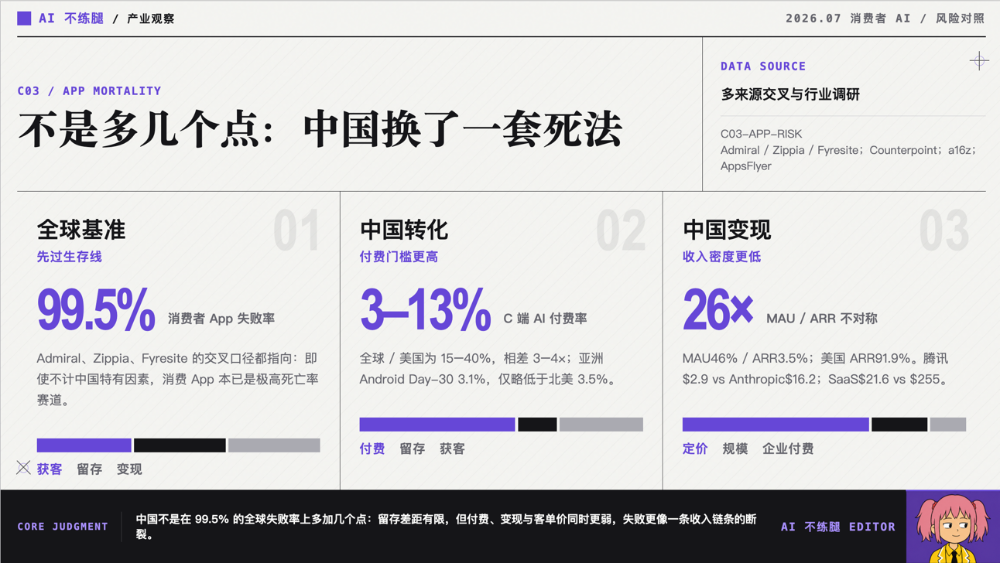
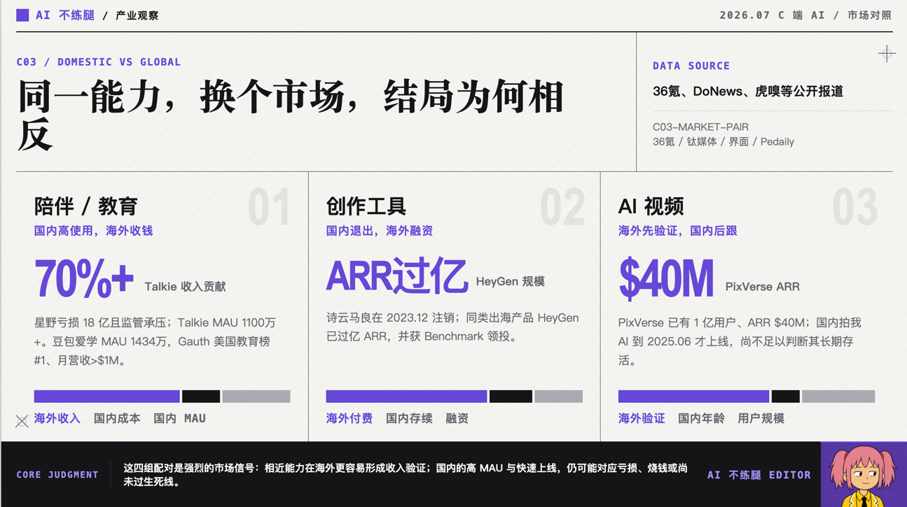

我之前加入过一家 AIGC 初创公司。
公司想做一个爆款 C 端 AI 应用。
各种原因，我们没做出来。以后有机会，我会把这段经历单独炒一盘回锅肉，这里先不展开。
话又说回来，到了 2026 年 7 月，AI 已经进化得很疯狂，行业里讨论的话题也彻底变了。
从 2025 年 Claude Code 对外开放，到 2026 年大家开始讨论 Skill、Harness、Loop Engineering，行业的注意力正从“做一个能聊天、能画图、能生成内容的 AI 应用”，转向“怎么让 AI 真正完成复杂工作”。
AI 不再只是上台表演才艺。
但在这个时候，我反而冒出一个很好奇的问题。
从 2024 年开始爆火的那批 C 端 AI 应用，现在到底怎么样了？
反正我每天看的 AI 日报都在告诉我，AI 行业每天至少有一颗核弹爆炸，日抛型 SOTA 模型层出不穷。
那批原来做 C 端 AI 应用的公司，是已经被这场疯狂的技术进化轰炸成了渣，还是吸收了 AI 核辐射，进化成了强大的火星蟑螂？
我的体感是，到现在为止，仍然没有看到一个真正意义上的国内爆款 C 端 AI 应用。
当然，也可能不是它们没有成功。
也可能是在我看不到的地方，一群创业者早就看清了未来：像我这样的国内垂类用户，消费能力不强，意见还特别多，根本不值得服务。
于是他们非常理性地忽略了我，顺手帮我制造了一个信息茧房。
基于这种体感，我一开始想下一个很不负责任的暴论。
做国内市场的 C 端 AI 初创产品，死亡率高达 100%。
后来觉得这样说不够严谨，于是重新调研了 110 个从 2024 年至今出现的 AI 产品。
调研完成后，我很高兴地告诉各位创业者。
国内娱乐类 AI 产品的死亡率没有达到 100%，大概只有 90% 到 95%。
作为参考，全球消费者 App 失败率约 99.5%。
所以真相可能是，还有很多挂掉的 AI 产品没有被我调研到。
或者，消费级 AI 产品的表现超出预期，狠狠打了我的脸。
调研分析显示，AI 陪伴和 AIGC 社区的死亡率接近 100%。
有兴趣挑战自己、挑战统计学极限的朋友，可以优先考虑这两个方向。
相比之下，在我的调研样本中，C 端工具类 AI 产品的存活率大概在 38% 到 50%。
听上去还不错。
但很多产品也只是维持着生物学意义上的存活。
至于活得是否体面，就不太好说了，像我一样。
看完这 110 个产品后，我发现国内 C 端 AI 创业最后大概只剩三条路。
小、跑、死。
“小”不是先做一个小产品，等验证成功后再慢慢长大。
而是从一开始，就把它当成一门小生意。
团队控制在一到两个人，比如两口子关起门来搞产品。月成本低于 5 万元，开发、运营、客服、设计、推广最好全由同一个人完成。
一个人既当 CEO，也当产品经理和程序员。晚上服务器挂了，还得自己从床上爬起来修。
比如 Podwise，两人团队，早期两个月做到 1.44 万美元 ARR。
ThinkAny 是独立开发者项目，没有融资。
这类产品共同的特点，是不追求大规模增长，不建立庞大团队，也不花几千万元请何老师拍广告，再把广告塞进电梯里。
只要有一千个稳定付费用户，就能养活整个团队，属于一人吃饱全家不饿。
当然严格来说，这很难算传统意义上的“创业公司存活”。
它更像是一个 freelancer 用软件养活了自己。
“跑”的意思，是跑出去。
更准确一点，是跑去赚资本主义的钱。
不得不说，万恶的资本主义，确实把那帮老外的消费习惯惯得非常刁钻。
我以前看《老友记》，Joey 吃炸鸡只吃外面的皮，里面的肉全扔掉。
这种行为要是出现在中国家庭里，不但鸡腿保不住，Joey 自己的腿可能也保不住。
但这种消费习惯背后，对应着一个很现实的问题。
歪果仁有更好的消费习惯，属于我今天不花出去一百块就睡不着。
同样一个 AI 产品，放在国内，像我这样的低质量用户会先去 B 站搜白嫖教程。
放到海外，用户虽然也会嫌贵，但至少愿意掏出信用卡试一下。
Counterpoint Research 2026 年第一季度和 a16z 等机构的报告，都指向一个很夸张的不对称现象。
全球 AI 产品的 MAU 中，有很大一部分来自美国之外的市场；但 AI 产品绝大部分 ARR，仍然集中在美国。
中国及相关市场贡献了大约 46% 的 AI MAU，却只贡献了约 3.5% 的 ARR；美国则贡献了约 91.9% 的 ARR。
翻译成人话，全村的人都在你家店里吃饭，看起来门庭若市，吃完之后却没几个人付钱。

同一个产品，国内版和海外版的命运有时候差异非常夸张。
MiniMax 的 AI 陪伴产品，国内做星野，海外做 Talkie。
星野面临亏损和监管压力，Talkie 则拥有千万级月活，并贡献了公司大量收入。
诗云科技的国内产品诗云马良最终注销，海外方向却长出了 HeyGen，后来成了 AI 视频领域的代表公司。
爱诗科技也是先在海外用 PixVerse 验证，做到上亿用户和数千万美元 ARR，之后才重新回到国内推出拍我 AI。
这几组案例最有意思的地方，是它们近似构成了一个对照实验。
产品方向差不多，团队能力差不多，底层模型能力也差不多。
只改变一个变量。
市场从国内换到海外。
产品的命运就完全不一样了。

所以很多时候，不是 C 端 AI 产品没有价值。
而是中国的 C 端付费市场，没办法支撑它按一家典型创业公司的成本结构活下去。
最后一种结果，就是死。
有一些创始人比较幸运，见好就收。
产品做出一定用户量后，卖给大厂，拿钱离场，从此财富自由，去云南种蔬菜。
有一些公司选择转型。
原来做 AI 社区，后来改做企业服务；原来做 AI 陪伴，后来改做 Agent；原来要改变全球十亿人的生活，后来开始给企业卖知识库。
还有一些公司继续融资。
既然已经走到这里，不如和投资人一起赌上未来。只要下一轮融资能进来，今天的问题就留给明天解决。
但如果一个产品同时满足下面几个条件。
团队很大、成本很高、只做国内市场、没有稳定付费、用户留存一般，还要持续消耗大量 Token。
那基本就属于天崩开局。
天无绝人之路，但创业者自己买了水泥，连夜修了一条路，再亲手把出口封死。
相信二十年之后，当人类真正进入 AGI 时代，我们会记得这些创业者英勇的牺牲与奉献。
为什么国内 C 端 AI 创业这么难。
全球消费者 App 的失败率，本来就很高。
一些行业统计甚至把失败率估计在 99% 以上。
所以，C 端创业从来都不容易。
中国市场又在这个困难模式上，额外叠加了几个 Buff。
付费率低，ARPU 低，AI 产品的边际成本还这么高，还有神秘力量变幻莫测。
朱啸虎曾公开表达过一个很有争议的观点，“很多 AI 应用只是套壳，所谓壁垒是在忽悠人。”
但他同时也说过，“过去十年，全球超过百亿美元估值的 C 端 App，很多都是中国创业者做出来的。”
把这两句话放在一起看，其实很有意思。
中国创业者并不是不会做 C 端产品。
恰恰相反，过去十几年里，中国团队在移动互联网时代证明了很强的产品能力、增长能力和运营能力。
问题是，从 2022 年底 ChatGPT 问世之后，很多互联网老兵重新出来创业，带来的仍是上一轮互联网的作战地图。
这一套方法在移动互联网时代非常有效。
因为当用户规模足够大，即使用户不直接付费，也可以通过广告、电商、游戏、增值服务等方式慢慢变现。
但 AI 产品的逻辑变了。
一个 AI 产品如果没有真正解决问题，用户不会因为里面多了一个广场和关注按钮，就突发恶疾要掏钱给你。
很多产品看起来用户很多，社区很热闹，却既没有解决高价值问题，也没有形成高频刚需，更没有建立稳定的付费习惯。
建议还是学习峰哥，拿投资人的钱去反手去买点光模块。
国内 C 端 AI 还能不能做，更现实的路径可能只有三种。
第一，把公司做得足够小。
不要先证明自己能不能成为独角兽，先证明一千个用户能不能把团队养活。
第二，从第一天就做全球市场。
不要等国内验证失败后，再把产品翻译成英文。
第三，真正解决一个高价值问题。
C 端工具真正有机会的地方，不是功能更多，而是离最终成果更近。
用户不是想要一个 AI 视频生成器。
他想要一条今天晚上就能发出去、还能带来播放量的视频。
用户不是想要一个 AI 写作助手。
他想要一篇能够发布、不会被老板骂、最好还能带来转化的文章。
AI 产品与用户真正需求之间，往往隔着十万八千里。
谁能把这段距离缩短，谁才有机会活下来。
以上就是我个人对 AI C 端初创产品的看法。谢谢你看完。